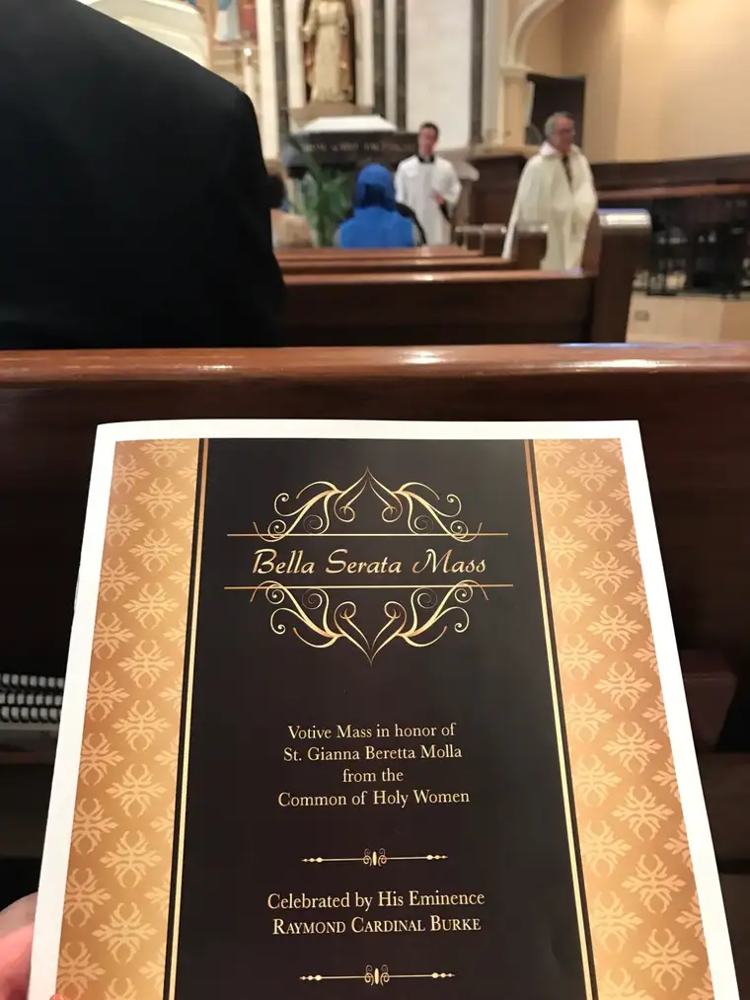
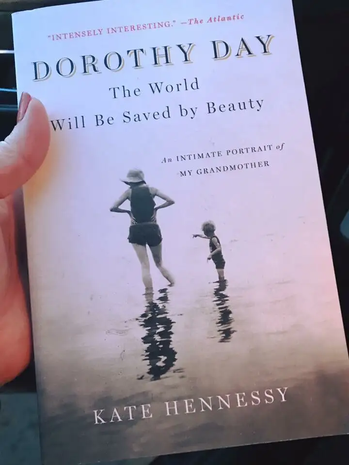
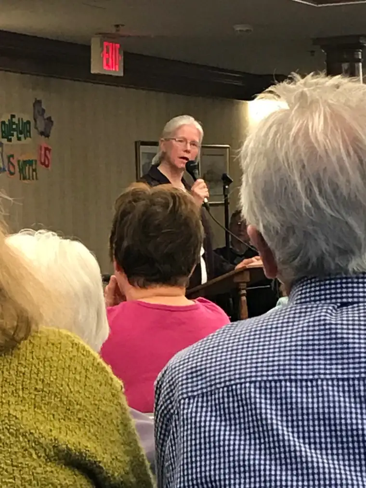
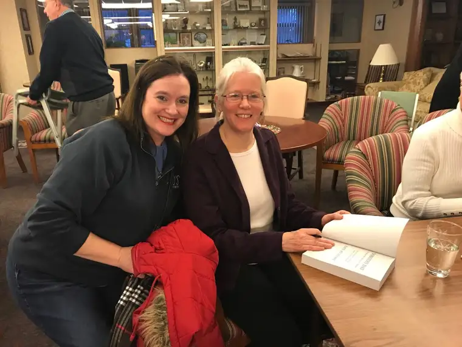

The chance to meet the offspring of a saint comes rarely, if ever. But recently, without leaving Fargo, I dipped my toes into heaven in this way — not once, but twice.
It happened first on April 17 with Dr. Gianna Emanuela Molla, welcomed from Italy by Saint Gianna’s Maternity Home in Warsaw, N.D., to promote devotion to her mother, Saint Gianna Beretta Molla, who was canonized by Pope John Paul II in 1994.

Molla, the youngest of four children, lives because her mother refused the physician-recommended abortion and hysterectomy during her high-risk pregnancy. Gianna Beretta, also a physician, died a week after her daughter’s Caesarean birth.
A Mass with Gianna at my parish of Sts. Anne & Joachim, celebrated by Cardinal Raymond Burke, included swirling, aromatic incense and sacred song that lilted lavishly from the choir loft, saturating my soul.

A tantalizing Italian dinner at a gala followed, with several inspiring talks, including from Molla, who spoke endearingly of her “saint mother and holy father,” and how her mother had called her father, Pietro, “the most affectionate little husband.”
But in their lives, she said, “there was immense joy, and immense suffering and sorrow.” Two years after her mother’s death, Molla’s oldest sister, Mariolina, 6, died.
Listening to Molla, my heart surged, not just for the prolife cause, of which her mother is a champion, but for marriage, which her parents lived out so beautifully through sacrificial love.
Then, on April 19, the Presentation Prayer Center hosted author Kate Hennessy, who read from her book, “Dorothy Day: The World Will Be Saved by Beauty: An Intimate Portrait of My Grandmother.”

Day, though not yet canonized, has been named a “Servant of God” — a step toward sainthood — through the merits of her own remarkable Christian life. A social-justice activist and journalist, Day drew near to the poor, opera and, according to her youngest granddaughter, “instant black coffee and the psalms.”
The second event packed a humble convent with admirers of Day wanting to touch a piece of their heroine through her ninth, and youngest, granddaughter.
“Once you let Dorothy Day into your life, she will not let up,” Hennessy said of the person she knew as “Granny.” “She pushes us to think about who we are…sometimes that’s exciting, but sometimes, it’s oppressive.”

Revealing pieces of Day’s complicated life, Hennessy said it took seven years to complete the memoir due to complex family dynamics, and her desire to bring healing through the work.
Both events, though contrasting, offered glimpses of the eternal, reminding us that even saints cannot reach heaven without enduring the cross, but ultimately, all returns to love.
As Molla concluded, through her parents’ witness, “Love is much stronger than death.” And as Hennessy remarked, quoting her grandmother, “Where there is no love, put love and you will find it.”

[For the sake of having a repository for my newspaper columns and articles, I reprint them here, with permission, a week after their run date. The preceding ran in The Forum newspaper on May 6, 2018.]